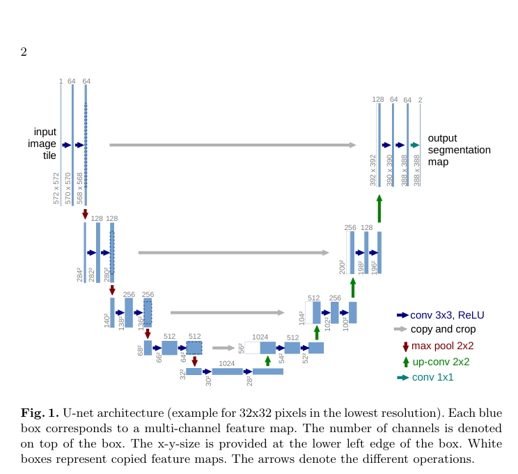
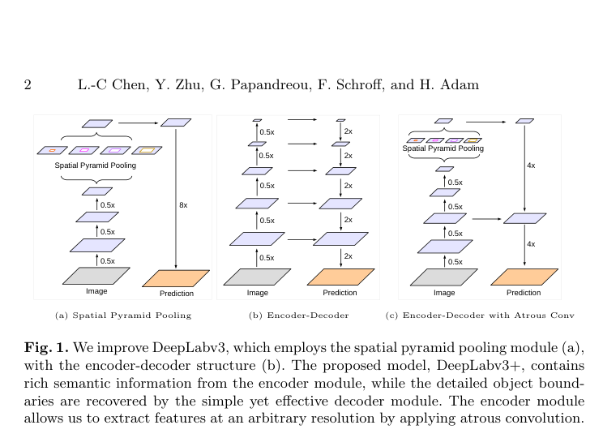
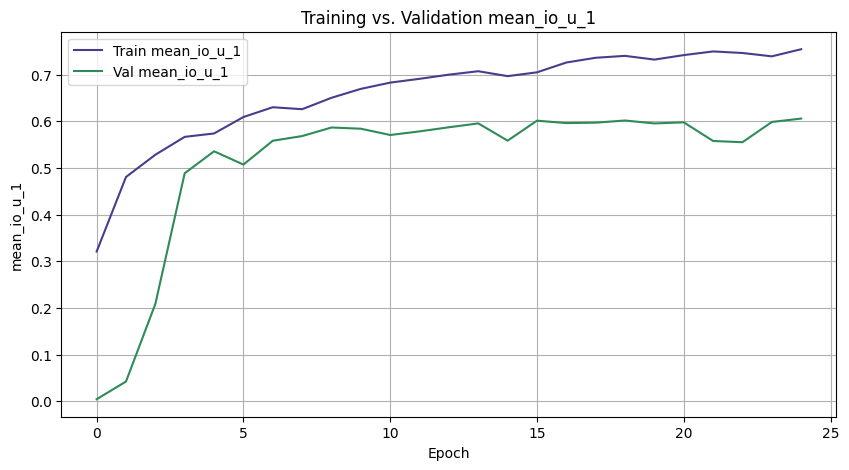
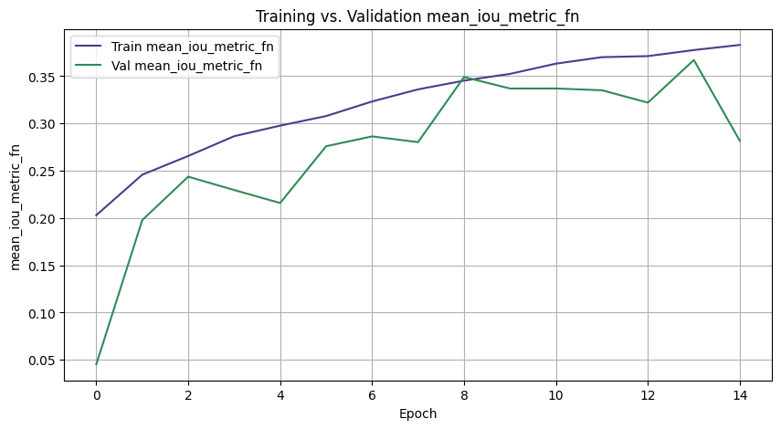
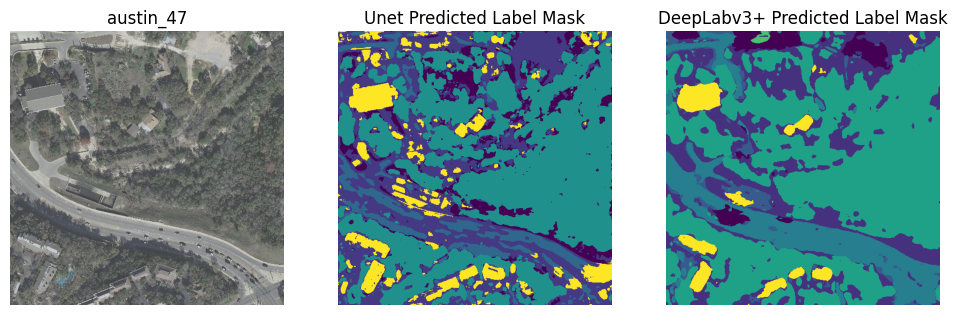
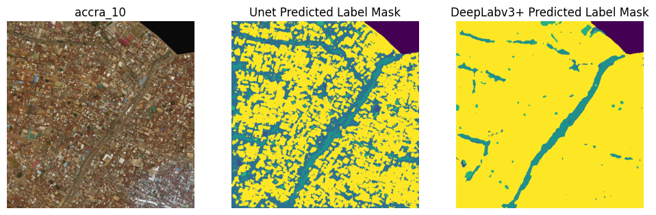
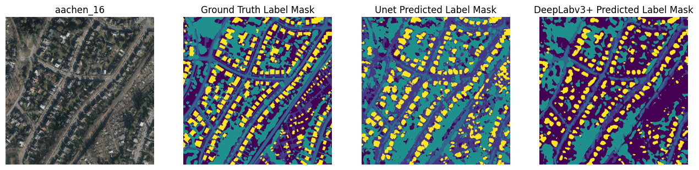
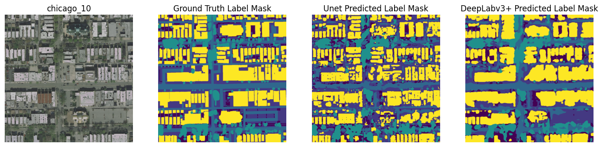

DATA 5610 · OPENEARTHMAP · SEMANTIC SEGMENTATION
Addressing the Heterogeneity Problem with Automated Land Cover Classification
I compared U-Net and DeepLabV3+ on high-resolution satellite imagery to see how each model handled dense, varied city scenes, where small land-cover classes can disappear into larger shapes.
Why heterogeneous cities are hard to map
Land-cover maps support urban planning, agriculture, disaster response, and other spatial analyses. Manually labeling every pixel takes time: the report notes that one 1,024 × 1,024 tile can take about two and a half hours to label. Automated models reduce that work, but mixed urban scenes are still difficult. At lower resolution, narrow roads, small buildings, and patches of vegetation can blend together or disappear.
I used OpenEarthMap's high-resolution imagery to compare two segmentation approaches. Each model predicts a land-cover label for every pixel, so the shape of a road or a small patch between buildings matters as much as the broad class of the surrounding area.
Preparing the imagery
OpenEarthMap combines high-resolution images from geographically varied cities, generally at 0.25 to 0.5 meters per pixel. I loaded RGB GeoTIFFs and their label masks as image-mask pairs, resized them to 512 × 512 pixels with Lanczos interpolation, and passed them to TensorFlow dataset generators.
Some images were missing because they came from the xBD dataset and were not available in the copy I used. I left those pairs out. The notebook logs show that the training and validation losses had stabilized, but the available test split had no retained pairs, so the reported model evaluation uses validation data.
A baseline, then more spatial context
U-Net: carry detail through the decoder
The U-Net paper pairs a contracting path with an expanding path. Repeated convolutions and pooling shrink the feature maps while collecting context; the decoder upsamples them again. At each level, skip connections join the decoder to high-resolution features from the matching encoder stage. Those copied features help the final mask recover where boundaries and small objects sit in the image.
I built this project's U-Net from scratch in TensorFlow. It has four encoder stages with 64, 128, 256, and 512 feature channels, a 1,024-channel bottleneck, and four corresponding decoder stages. A final 1 x 1 convolution produces the configured class probabilities. This gave me a useful baseline, but its masks often had soft boundaries and pixel-level noise.

DeepLabV3+: add context at several scales
The DeepLabV3+ paper combines atrous spatial pyramid pooling (ASPP) with a decoder. Atrous, or dilated, convolutions sample a wider area without another pooling step. ASPP runs several dilation rates in parallel, so features can include nearby detail and broader scene context. The decoder joins those features with earlier, higher-resolution features to refine object boundaries.
My implementation uses an ImageNet-pretrained ResNet50 encoder. It feeds a high-level feature map through ASPP branches at rates 1, 6, 12, and 18, then upsamples and joins that context with a lower-level feature map from the encoder before predicting the mask. The paper also explores Xception and depthwise-separable convolutions; this project uses ResNet50 instead, so it is not an exact reproduction of every paper configuration.

The two designs address the same tension in different ways: U-Net returns encoder detail through direct skip connections, while DeepLabV3+ builds a multi-scale context representation and refines it with a decoder.
Validation performance
Mean Intersection over Union (mIoU) measures how much a predicted region overlaps its reference label. For one class, IoU = intersection / union: the intersection is the pixels predicted and labeled as that class; the union is every pixel predicted or labeled as that class. mIoU takes the average of the IoU scores across classes. A score of 1 means perfect overlap; 0 means no overlap. Since each class contributes one score to the average, a small class can matter as much as a common one.
mIoU is an overlap-quality score, not an error percentage: higher is better. I tracked it on the validation data during training. In the report's curves, DeepLabV3+ moved ahead of U-Net by epoch four. I trained it ten epochs longer, but its validation curve then largely flattened while training performance continued to improve. That gap suggests the model may be fitting its training examples more closely than the validation examples.


These are validation curves, not test-set results. The dataset copy used for the project had no retained labeled test pairs, so I could not measure performance on a held-out test set. The nine configured output channels also do not match OpenEarthMap's eight documented classes, which limits class-by-class interpretation of mIoU.
What the masks show
On the Austin example, U-Net captures the broad classes but sometimes merges nearby classes into larger shapes. DeepLabV3+ produces cleaner shapes around larger buildings and roads, which fits the benefit I expected from giving the model more spatial context.

Accra shows the trade-off. U-Net picks up developed space between small houses, while DeepLabV3+ labels much of the area as building. The broader context helps with large shapes, but it can also cause the model to overgeneralize at finer scales.

The model-comparison notebook shows additional examples with the input image and reference label alongside both predictions:


What I would try next
The models still struggle to draw fine object boundaries. The report identifies several practical limits: individual tiles cover large areas, so tiled predictions can look patchy where neighboring tiles do not share context; high-resolution imagery is costly to scale; and models trained on varied city scenes may behave poorly on more uniform landscapes. U-Net also produced scattered class predictions in some areas.
I would test a sliding-window prediction so edge pixels are evaluated in overlapping image windows, add near-infrared imagery to help distinguish vegetation, and try PointRend to sharpen boundaries.
Project files and references
- Read the project report
- U-Net notebook · outputs removed
- DeepLabV3+ notebook · outputs removed
- Model comparison notebook · outputs removed
- Ronneberger, Fischer, and Brox (2015), U-Net: Convolutional Networks for Biomedical Image Segmentation.
- Chen et al. (2018), Encoder-Decoder with Atrous Separable Convolution for Semantic Image Segmentation.
- OpenEarthMap dataset · Xia et al., 2023